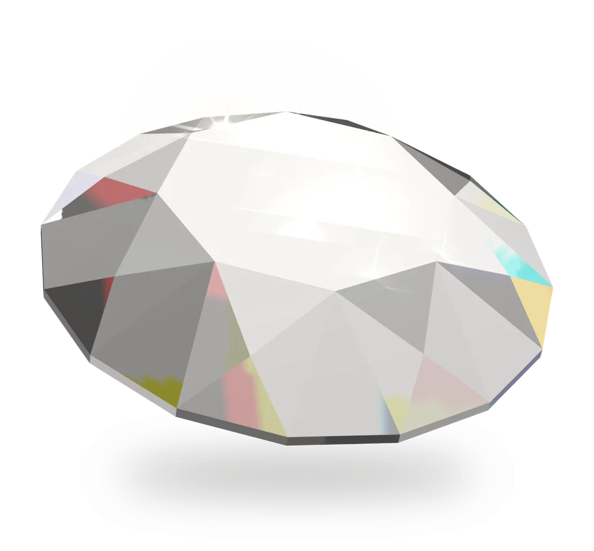

Umarbeiten
Aus geerbtem Schmuck oder Altgold entsteht ein neues Stück nach Ihren Vorstellungen – zum Beispiel ein Ring aus der Kette der Großmutter.
Neuanfertigung und UmarbeitungNachhaltigkeit
Wir möchten, dass Sie Ihren Schmuck mit gutem Gewissen tragen. Deshalb achten wir auf Qualität und Herkunft unserer Diamanten, verarbeiten in unserem Brillantschmuck Labordiamanten und geben Gold, das niemand mehr trägt, ein zweites Leben.

Nachhaltigkeit bei Rubin
Unsere Labordiamanten stehen für eine neue Ära der Nachhaltigkeit im Schmuckhandwerk. Sie wachsen in kontrollierten Laborumgebungen statt in Minen – ohne die Eingriffe des Bergbaus in Landschaften und ohne die Probleme, die mit dem Abbau verbunden sein können.
Weil sich die Bedingungen im Labor genau steuern lassen, entstehen Diamanten von hoher Reinheit. Chemisch, physikalisch und optisch sind sie Diamanten aus der Erde gleich – nur ihre Entstehung ist eine andere. Jedes Stück soll unseren Anspruch an Herkunft und Verarbeitung erfüllen: langlebig, konfliktfrei und von hoher Qualität.
Altgold
Gold lässt sich immer wieder einschmelzen, ohne an Wert oder Qualität zu verlieren. Deshalb muss Schmuck, den niemand mehr trägt, nicht in der Schublade liegen bleiben.
Aus geerbtem Schmuck oder Altgold entsteht ein neues Stück nach Ihren Vorstellungen – zum Beispiel ein Ring aus der Kette der Großmutter.
Neuanfertigung und UmarbeitungWas Sie nicht mehr tragen möchten, kaufen wir zum tagesaktuellen Preis an – geprüft und gewogen vor Ihren Augen. So kommt das Edelmetall zurück in den Kreislauf.
So läuft der Goldankauf abLanglebigkeit
Ein gutes Schmuckstück begleitet Sie ein Leben lang, wenn man es pflegt. Bringen Sie uns, was gerissen, locker oder stehen geblieben ist – wir sehen es uns an und besprechen mit Ihnen, was zu tun ist.
Unsere Versprechen
Was Juwelier Rubin ausmacht – in allen vier Filialen.
Unsere Ringe werden in Deutschland gefertigt.
Wir nehmen uns Zeit für Ihre Fragen und zeigen Ihnen die Unterschiede direkt am Finger.
Über 1.250 Ringmodelle im Katalog, dazu Brillantschmuck und zwölf Uhrenmarken.
In unserem Brillantschmuck verarbeiten wir Labordiamanten – gewachsen ohne Bergbau.
Harburg, Alstertal, Norderstedt und Lüneburg – jeweils mit Service und Goldankauf.
In der Filiale zeigen wir Ihnen Brillantschmuck mit Labordiamanten und beraten Sie zur Umarbeitung Ihres Altgolds.
Entwurf der neuen Website von Juwelier Rubin. Formulare senden hier nichts; der Hersteller-Katalog und die Uhren-Showrooms laden erst auf rubin-gold.de.